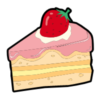

Hello, welcome to my GitHub profile
Here are a few things that describe me:

-
💼 I'm currently working full-time at Readboy as a web developer
- 📝 I maintain a web development blog at canace.site
-
⌨️ I spend most of my time writing JavaScript on the front-end,
sometimes witing back-end whith Go or Node
-
💬 The two social platforms I'm active on are 掘金 and 知乎, where I
mostly post about web development. Feel free to connect and reach out
to me there.
The content below is my new blog
- CSS 小技巧
- 开始用 Beego 写 Http 服务
- Egg 快速上手
- 第一个 Go 程序
- Typescript 笔记
- 从零开始撸一个 Tinymce 图片上传插件
- Centos 服务器登录配置
- Flow简易教程
- 微信小程序小技巧
- Vue 单元测试